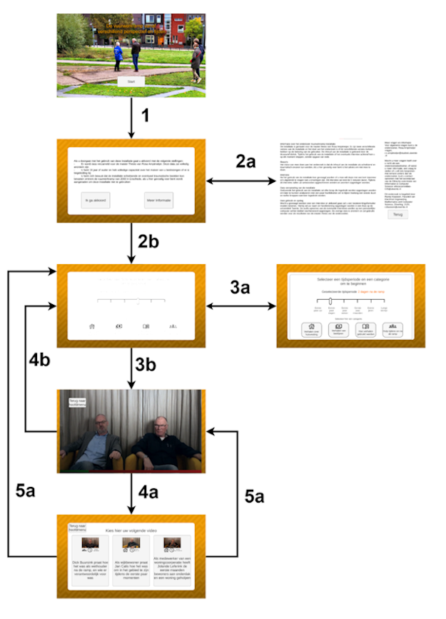

Museum Installation
Summary
For my graduation project, I developed an interactive installation for a museum. I worked with MuseumFabriek in Enschede and created an installation about the 2000 fireworks disaster to browsed interviews with involved people.
Context
Before my installation, the exhibit consisted of a compilation of five looping videos. Visitors could watch them but had no choice in what they saw. My goal was to make the experience interactive, let visitors explore what interested them, let themlearn more about specific aspects, and understand the relationships between different people involved. Adding interactivity made the experience both more engaging and educational.

Process
I began with literature research to define the right framework and requirements. Five key design principles emerged:
- The installation must address multiple audiences
- It must allow free exploration.
- It must support multiple users simultaneously.
- It must provide added value beyond static displays.
- Language should remain accessible (B1 Dutch level).
After testing the installation in the museum conclusion were made that a lot of the interation was unclear. A complete redesign was made so it better guided the user thoughout using the application.
Final design

Final design: The final design was placed in the musuem, it was tested during a 2 month period. Behavior was measured through log data (clicks, usage duration), direct observation, questionnaires (based on the Museum Experience Scale), and interviews. Those results revealed design issues and thus a redesign was made. This redesign makes the options for the user a lot clearer and shows a preview of the video they are about to watch. This redesign stayed as a wireframe in Figma and isn't developed further.
Reflection
Although the project had challenges, including its size and my other commitments such as local politics, it was highly educational. I gained hands-on experience with Unity and Figma, and I learned how to translate design processes into real-world solutions. Personally, I grew in identifying my own pitfalls, managing long-term projects, and working under stress. Going through this process, especially during the COVID-19 pandemic, taught me to stay on the goal and not get distracted by unnecessary details.